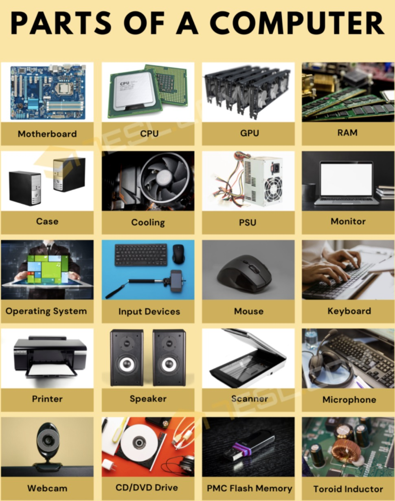

COMPUTER HARDWARE

Computer hardware includes the physical parts of a computer, such as the
central processing unit (CPU), random-access memory (RAM), motherboard,
computer data storage, graphics card, sound card, and computer case. It
includes external devices such as a monitor, mouse, keyboard, and
speakers.By contrast, software is a set of written instructions
that can be stored and run by hardware. Hardware derived its name from the
fact it is hard or rigid with respect to changes, whereas software is soft
because it is easy to change. Hardware is typically directed by the
software to execute any command or instruction. A combination of hardware
and software forms a usable computing system, although other systems exist
with only hardware.